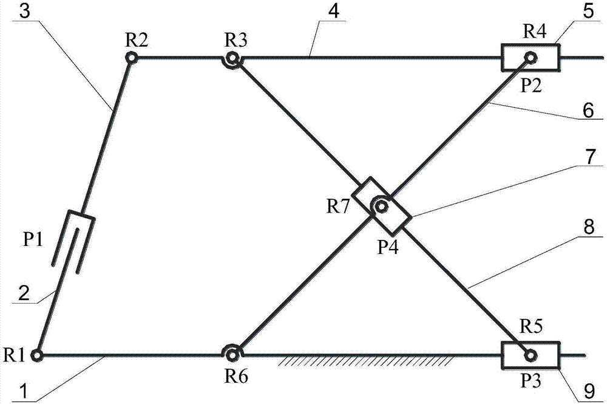
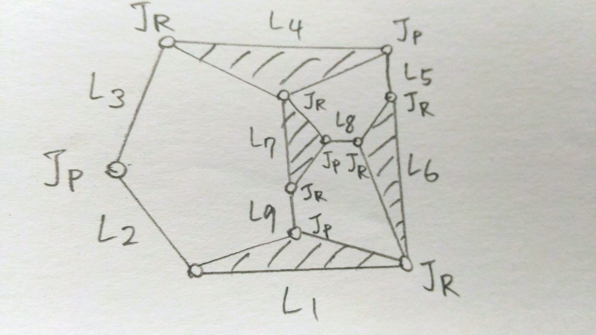

創意性機構設計實例報告
含耦合支鍊的平面兩自由度並聯機構
Planar two degree of freedom parallel mechanism with coupling branch
設計四乙 張元
Origin Mechanism

Degree of Freedom
Generalization

Calculation script

The Maximum Joint Number of Linkages
Combinations
[5, 4, 0]
[6, 2, 1]
[7, 0, 2]
Requirements
Constraints
- Ground and output linkage are not connected.
- Number of joint of ground is same as output linkage.
Atlas

Target